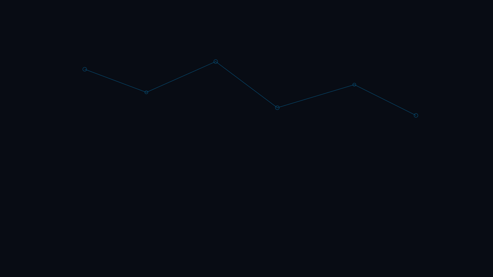

Transforma la gestión universitaria con inteligencia artificial
UNI SIGEA centraliza convocatorias, talento humano y procesos académicos para instituciones de educación superior.

Historia de la IA
Sobre UNI SIGEA
Plataforma diseñada para universidades que buscan digitalizar procesos de convocatoria, admisión y administración con trazabilidad y analítica en tiempo real.
Módulos principales
Gestión de Convocatorias
Publicación y seguimiento.
Usuarios y Roles
Permisos por perfil institucional.
Validación de Documentos
Automatización inteligente.
Seguimiento de Postulaciones
Estados y notificaciones.
Panel Administrativo
Métricas e informes.
Beneficios
Estadísticas simuladas
Convocatorias
Instituciones activas
Documentos validados
Tiempo ahorrado (%)
Usuarios
Testimonios
Preguntas frecuentes
Persona transhumana y compromiso ético
«Soy LIBRE, AUTÓNOMO Y RESPONSABLE a través del diálogo y la construcción, como ideal regulativo; me dirijo, controlo y dicto mis propias leyes.»
Declaración institucional integrada en UNI SIGEA como filosofía orientadora: desarrollo humano, autonomía, transformación positiva, bienestar, evolución personal y responsabilidad social.
Institutional declaration guiding this project: human development, autonomy, positive transformation, wellbeing, personal growth, and social responsibility.
Instructor
Juan Esteban Acosta Santana
Ingeniería de Sistemas y Computación — Universidad de Cundinamarca.
acostasantanajuanesteban@gmail.com · Ubaté, Cundinamarca